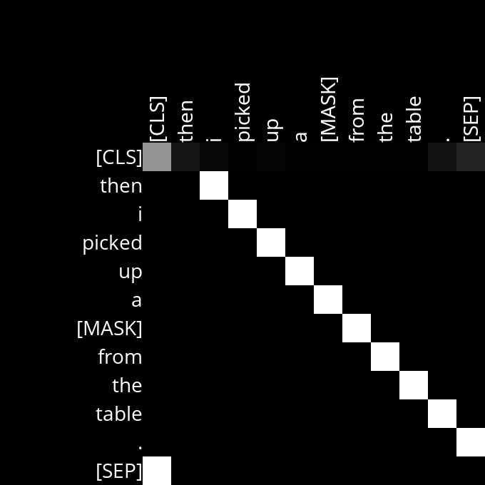
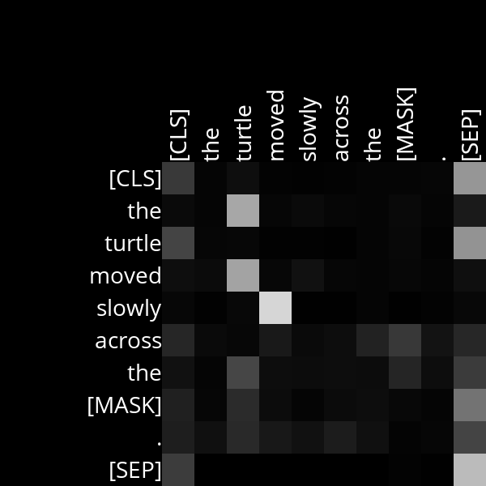
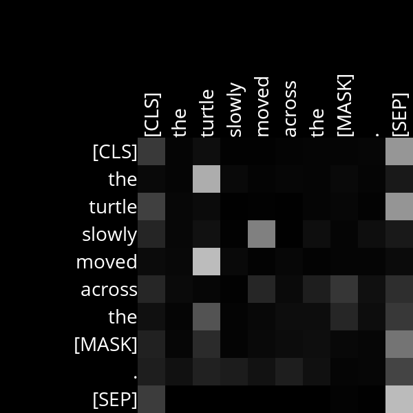
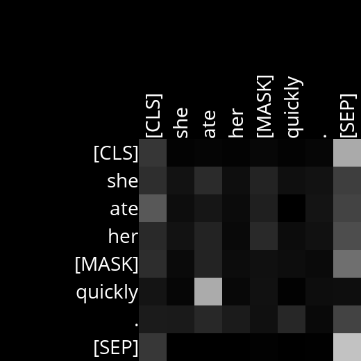

Attention
The latest version of Python you should use in this course is Python 3.12.
Write an AI to predict a masked word in a text sequence.
$ python mask.py
Text: We turned down a narrow lane and passed through a small [MASK].
We turned down a narrow lane and passed through a small field.
We turned down a narrow lane and passed through a small clearing.
We turned down a narrow lane and passed through a small park.
$ python mask.py
Text: Then I picked up a [MASK] from the table.
Then I picked up a book from the table.
Then I picked up a bottle from the table.
Then I picked up a plate from the table.
When to Do It
How to Get Help
- Ask questions via Ed!
- Ask questions via any of CS50’s communities!
Background
One way to create language models is to build a Masked Language Model, where a language model is trained to predict a “masked” word that is missing from a sequence of text. BERT is a transformer-based language model developed by Google, and it was trained with this approach: the language model was trained to predict a masked word based on the surrounding context words.
BERT uses a transformer architecture and therefore uses an attention mechanism for understanding language. In the base BERT model, the transformer uses 12 layers, where each layer has 12 self-attention heads, for a total of 144 self-attention heads.
This project will involve two parts:
First, we’ll use the transformers Python library, developed by AI software company Hugging Face, to write a program that uses BERT to predict masked words. The program will also generate diagrams visualizing attention scores, with one diagram generated for each of the 144 attention heads.
Second, we’ll analyze the diagrams generated by our program to try to understand what BERT’s attention heads might be paying attention to as it attempts to understand our natural language.
Getting Started
- Download the distribution code from https://cdn.cs50.net/ai/2023/x/projects/6/attention.zip and unzip it.
- Inside of the
attentiondirectory, runpip3 install -r requirements.txtto install this project’s dependencies.
Understanding
First, take a look at the mask.py program. In the main function, the user is first prompted for some text as input. The text input should contain a mask token [MASK] representing the word that our language model should try to predict. The function then uses an AutoTokenizer to take the input and split it into tokens.
In the BERT model, each distinct token has its own ID number. One ID, given by tokenizer.mask_token_id, corresponds to the [MASK] token. Most other tokens represent words, with some exceptions. The [CLS] token always appears at the beginning of a text sequence. The [SEP] token appears at the end of a text sequence and is used to separate sequences from each other. Sometimes a single word is split into multiple tokens: for example, BERT treats the word “intelligently” as two tokens: intelligent and ##ly.
Next, we use an instance of TFBertForMaskedLM to predict a masked token using the BERT language model. The input tokens (inputs) are passed into the model, and then we look for the top K output tokens. The original sequence is printed with the mask token replaced by each of the predicted output tokens.
Finally, the program calls the visualize_attentions function, which should generate diagrams of the attention values for the input sequence for each of BERT’s attention heads.
Most of the code has been written for you, but the implementations of get_mask_token_index, get_color_for_attention_score, and visualize_attentions are left up to you!
Once you’ve completed those three functions, the mask.py program will generate attention diagrams. These diagrams can give us some insight into what BERT has learned to pay attention to when trying to make sense of language. For example, below is the attention diagram for Layer 3, Head 10 when processing the sentence “Then I picked up a [MASK] from the table.”

Recall that lighter colors represent higher attention weight and darker colors represent lower attention weight. In this case, this attention head appears to have learned a very clear pattern: each word is paying attention to the word that immediately follows it. The word “then”, for example, is represented by the second row of the diagram, and in that row the brightest cell is the cell corresponding to the “i” column, suggesting that the word “then” is attending strongly to the word “i”. The same holds true for the other tokens in the sentence.
You can try running mask.py on other sentences to verify that Layer 3, Head 10 continues to follow this pattern. And it makes sense intuitively that BERT might learn to identify this pattern: understanding a word in a sequence of text often depends on knowing what word comes next, so having an attention head (or multiple) dedicated to paying attention to what word comes next could be useful.
This attention head is particularly clear, but often attention heads will be noisier and might require some more interpretation to guess what BERT may be paying attention to.
Say, for example, we were curious to know if BERT pays attention to the role of adverbs. We can give the model a sentence like “The turtle moved slowly across the [MASK].” and then look at the resulting attention heads to see if the language model seems to notice that “slowly” is an adverb modifying the word “moved”. Looking at the resulting attention diagrams, one that might catch your eye is Layer 4, Head 11.

This attention head is definitely noisier: it’s not immediately obvious exactly what this attention head is doing. But notice that, for the adverb “slowly”, it attends most to the verb it modifies: “moved”. The same is true if we swap the order of verb and adverb.

And it even appears to be true for a sentence where the adverb and the verb it modifies aren’t directly next to each other.

So we might reasonably guess that this attention head has learned to pay attention to the relationship between adverbs and the words they modify. Attention layers won’t always consistently align with our expectations for a particular relationship between words, and they won’t always correspond to a human-interpretable relationship at all, but we can make guesses based on what they appear to correspond to — and you’ll do just that in this project!
Specification
First, complete the implementation of get_mask_token_index, get_color_for_attention_score, and visualize_attentions.
- The
get_mask_token_indexfunction accepts the ID of the mask token (represented as anint) and the tokenizer-generatedinputs, which will be of typetransformers.BatchEncoding. It should return the index of the mask token in the input sequence of tokens.- The index should be 0-indexed. For example, if the third input ID is the mask token ID, then your function should return
2. - If the mask token is not present in the input sequence at all, your function should return
None. - You may assume that there will not be more than one mask token in the input sequence.
- You may find it helpful to look at the
transformersdocumentation, in particular at the return value of calling a tokenizer, to see what fields theBatchEncodingwill have that you might want to access.
- The index should be 0-indexed. For example, if the third input ID is the mask token ID, then your function should return
- The
get_color_for_attention_scorefunction should accept an attention score (a value between0and1, inclusive) and output a tuple of three integers representing an RGB triple (one red value, one green value, one blue value) for the color to use for that attention cell in the attention diagram.- If the attention score is
0, the color should be fully black (the value(0, 0, 0)). If the attention score is1, the color should be fully white (the value(255, 255, 255)). For attention scores in between, the color should be a shade of gray that scales linearly with the attention score. - For a color to be a shade of gray, the red, blue, and green values should all be equal.
- The red, green, and blue values must all be integers, but you can choose whether to truncate or round the values. For example, for the attention score
0.25, your function may return either(63, 63, 63)or(64, 64, 64), since 25% of 255 is 63.75.
- If the attention score is
- The
visualize_attentionsfunction accepts a sequence oftokens(a list of strings) as well asattentions, which contains all of the attention scores generated by the model. For each attention head, the function should generate one attention visualization diagram, as by callinggenerate_diagram.- The value
attentionsis a tuple of tensors (a “tensor” can be thought of as a multi-dimensional array in this context). - To index into the
attentionsvalue to get a specific attention head’s values, you can do so asattentions[i][j][k], whereiis the index of the attention layer,jis the index of the beam number (always0in our case), andkis the index of the attention head in the layer. - This function contains an existing implementation that generates only a single attention diagram, for the first attention head in the first attention layer. Your task is to extend this implementation to generate diagrams for all attention heads and layers.
- The
generate_diagramfunction expects the first two inputs to be the layer number and the head number. These numbers should be 1-indexed. In other words, for the first attention head and attention layer (each of which has index 0),layer_numbershould be1andhead_numbershould be1as well.
- The value
Once you’re done implementing the three functions above, you should be able to run mask.py to predict masked words and generate attention diagrams. The second part of this project is to analyze those attention diagrams for sentences of your choosing to make inferences about what role specific attention heads play in the language understanding process. You’ll fill in your analysis in analysis.md.
- Complete the
TODOsin theanalysis.md.- You should describe at least two attention heads for which you’ve identified some relationship between words that the attention head appears to have learned. In each case, write a sentence or two describing what the head appears to be paying attention to and give at least two example sentences that you fed into the model in order to reach your conclusion.
- The “Understanding” section of this project specification includes two examples for you: Layer 3, Head 10 where tokens appear to pay attention to the tokens that follow them; and Layer 4, Head 11 where adverbs appear to pay attention to the verbs they modify. The aspects of language you identify should be different from these two.
- Attention heads can be noisy, so they won’t always have clear human interpretations. Sometimes they may attend to more than just the relationship you describe, and sometimes they won’t identify the relationship you describe for every sentence. That’s okay! The goal here is to make inferences about attention based on our human intuition for language, not necessarily to identify exactly what each attention head’s role is.
- You can look for any relationship between words you’re interested in. If looking for ideas, you might consider any of the following: the relationship between verbs and their direct objects, prepositions, pronouns, adjectives, determiners, or tokens paying attention to the tokens that precede them.
Hints
- When analyzing attention diagrams, you’ll often find that many tokens in many attention heads attend strongly to the
[SEP]or[CLS]tokens. This can happen in cases where there is no good word to pay attention to in a given attention head.
Testing
If you’d like, you can execute the below (after setting up check50 on your system) to evaluate the correctness of your code. This isn’t obligatory; you can simply submit following the steps at the end of this specification, and these same tests will run on our server. Either way, be sure to compile and test it yourself as well!
check50 ai50/projects/2024/x/attention
Execute the below to evaluate the style of your code using style50.
style50 mask.py
Remember that you may not import any modules (other than those in the Python standard library) other than those explicitly authorized herein. Doing so will not only prevent check50 from running, but will also prevent submit50 from scoring your assignment, since it uses check50. If that happens, you’ve likely imported something disallowed or otherwise modified the distribution code in an unauthorized manner, per the specification. There are certainly tools out there that trivialize some of these projects, but that’s not the goal here; you’re learning things at a lower level. If we don’t say here that you can use them, you can’t use them.
How to Submit
- Visit this link, log in with your GitHub account, and click Authorize cs50. Then, check the box indicating that you’d like to grant course staff access to your submissions, and click Join course.
-
Install Git and, optionally, install
submit50. - If you’ve installed
submit50, executesubmit50 ai50/projects/2024/x/attentionOtherwise, using Git, push your work to
https://github.com/me50/USERNAME.git, whereUSERNAMEis your GitHub username, on a branch calledai50/projects/2024/x/attention.
If you submit your code directly using Git, rather than submit50, do not include files or folders other than those you are actually instructed to modify in the specification above. (That is to say, don’t upload your entire directory!)
Work should be graded within five minutes. You can then go to https://cs50.me/cs50ai to view your current progress!